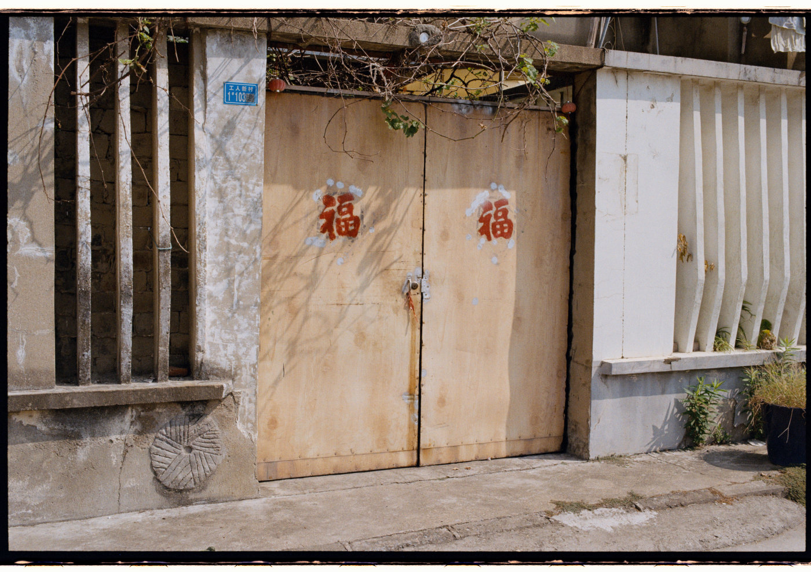
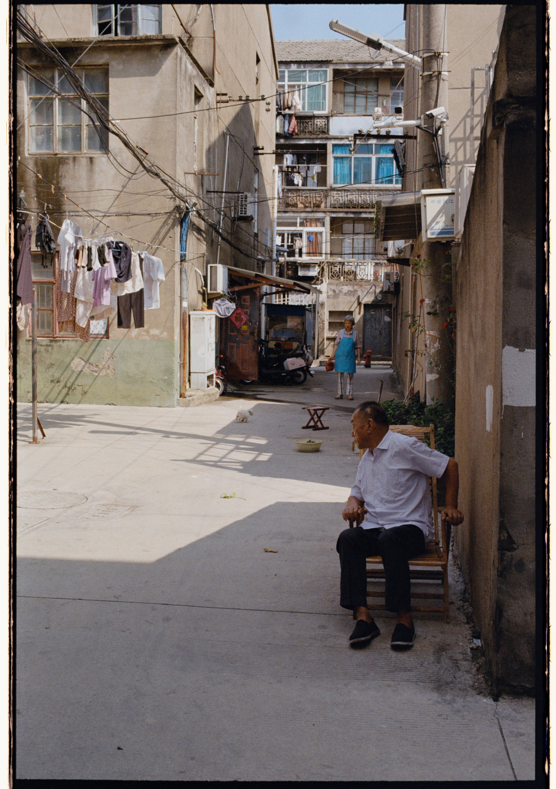
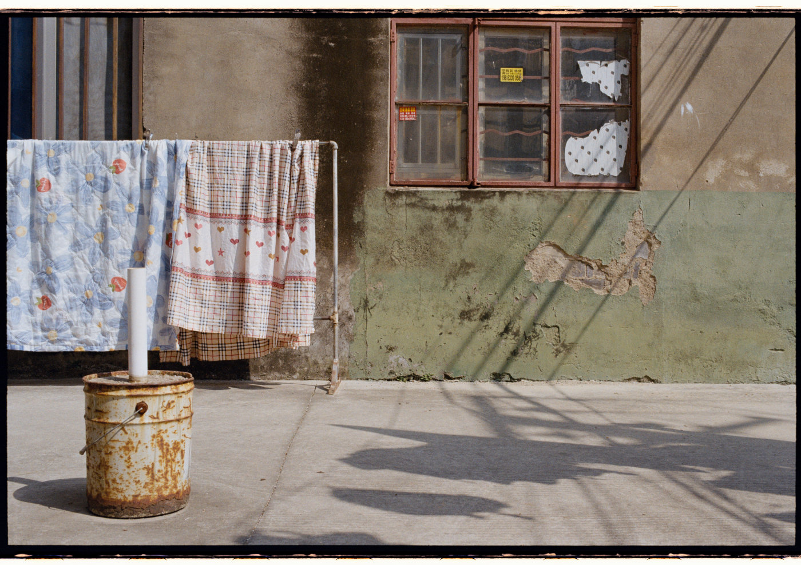
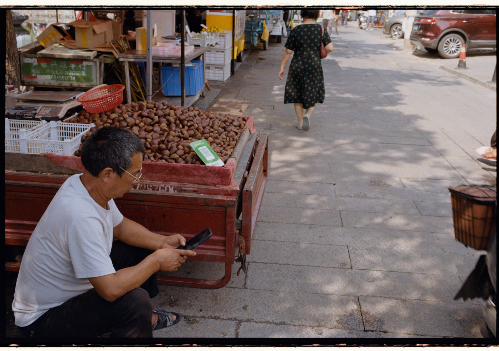
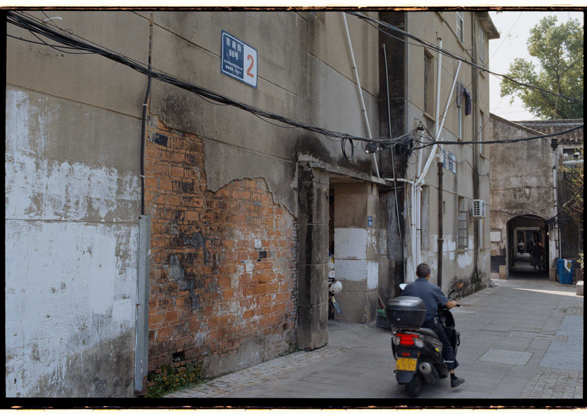
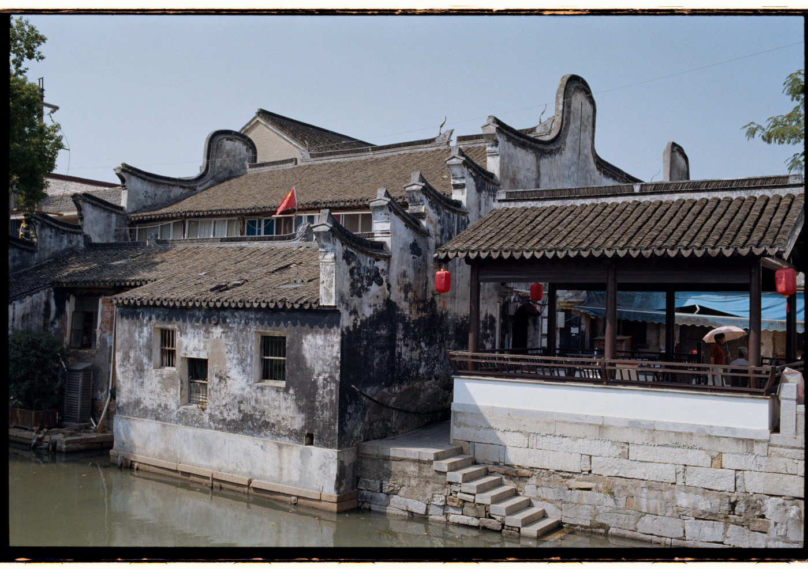
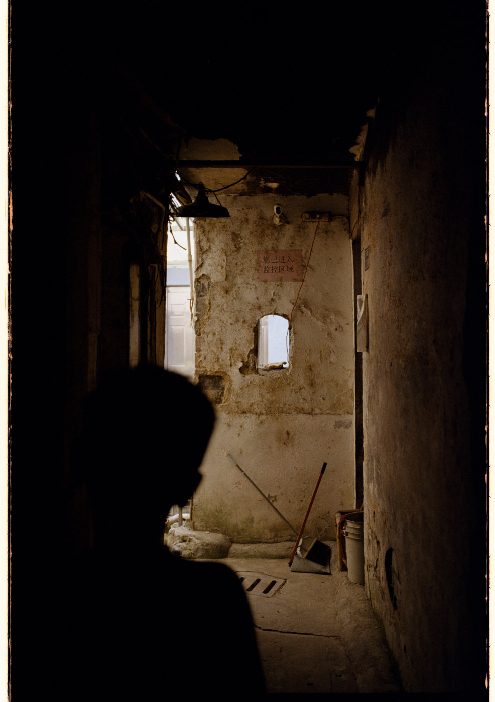
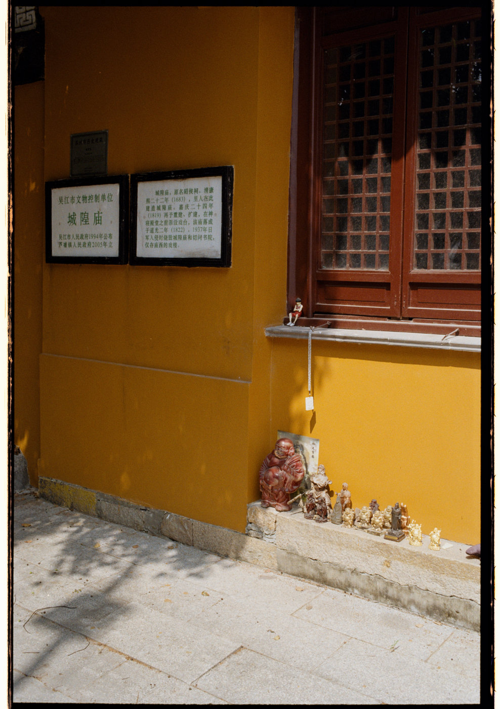
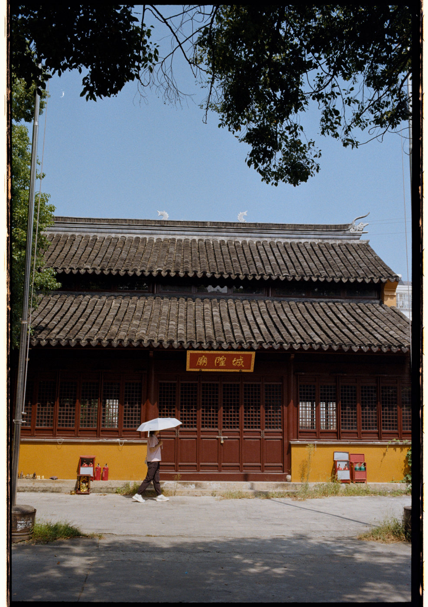
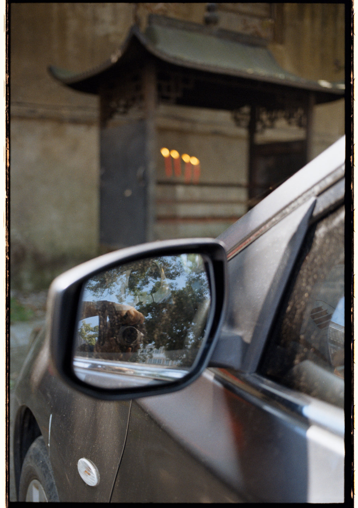

能够带着 EOS 50 出去拍胶片，对我来说是件愉快的事。这卷柯达金200之前已经拍了十多张，我想这次正好可以拍完，拿去冲洗。拍完一卷，等待冲洗，再看到成片--这种期待是胶片摄影独有的乐趣。
这次胶卷的冲扫我选择了一家小众而颇有口碑的店家，之前在小红书上看到的，当时就种草了。彩色负片的后期冲扫一直是让我有些纠结的环节：从冲洗到扫描，每一步都会影响照片最后的呈现。不过，也正因为这些环节值得琢磨，当它们配合得当时，胶片独有的色彩与质感仍然会让我眼前一亮。
这次发布的照片完全采用店家返图，因为我觉得已经很好，不需要再额外调整。
接下来，我还准备与朋友一起搭建一套底片翻拍系统，我想对于胶片，既然还想继续玩下去，不如折腾一下，把后面的扫描环节掌握在自己手中。
ENGLISH
Outing No. 017 | Luxu Ancient Town — Film Edition
Taking my Canon EOS 50 out to shoot film is a pleasure in itself. I had already exposed more than ten frames on this roll of Kodak Gold 200, so I thought this visit would be a good chance to finish it and send it off for processing. Finishing a roll, waiting for it to be developed, and finally seeing the photographs is one of the distinctive pleasures of film photography.
For this roll, I chose a small lab whose work I had come across on Xiaohongshu and had been eager to try. Processing and scanning color negatives have long been the more challenging parts of my film workflow. Every step can affect how the photographs eventually look. Yet that is also part of the appeal: when the process comes together, the particular colors and character of film can still surprise me.
All the photographs in this post are presented from the scans returned by the lab. I felt they already looked good as they were, so I decided not to make further adjustments.
I’m also planning to put together a film-scanning setup with a friend. Since I want to keep shooting film, it makes sense to take the next step and bring the scanning process in-house. It will be a practical improvement to my workflow—and another enjoyable project to tinker with.









